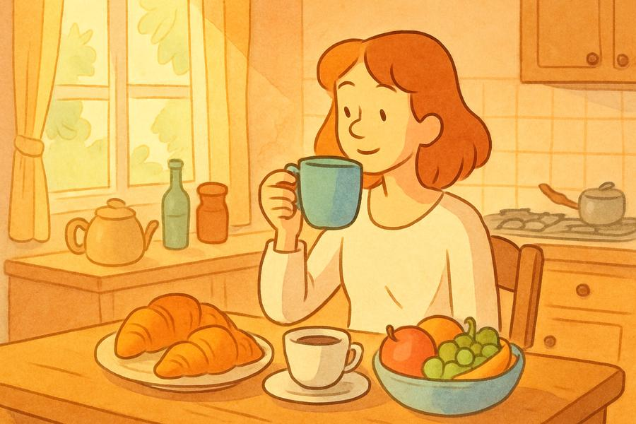

Écoutez, puis cliquez sur 🎤 et répétez.
| Genre / Nombre | Article | Exemple |
|---|---|---|
| Masculin singulier | du (= de + le) | Je mange du pain. |
| Féminin singulier | de la | Elle boit de la limonade. |
| Devant voyelle / h muet | de l' | Il prend de l’eau. |
| Pluriel | des | Nous avons des fruits. |
Aidez-nous à améliorer cette leçon.
Votre question sera transmise au professeur.